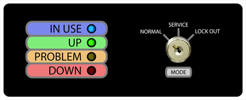
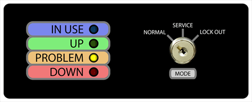
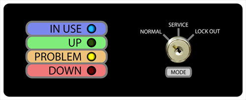
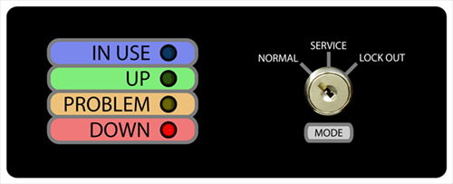
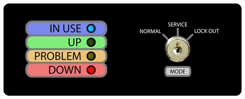

Interlock Boxes LED Lights Key
Please consult the following table to determine the state of a machine based on its interlock box lights:
| Lights | State of Machine |
|---|---|
 |
Tool is up with no reported problems and is not currently in use. |
|  | Tool is running with no reported problems. |
|  | Tool is not currently running and has one or more problems reported in Coral. |
|  | Tool is currently running and has one or more problems reported in Coral. |
|  | Tool is shutdown in Coral. |
 |
Key is switched to "LOCK OUT" and cannot be run. |
| Tool is not in use and interlock box cannot communicate with Coral. | |
|  | Tool is under repair and has been shut down through Coral. |
| Interlock box is in service mode and tool is capable of running regardless of Coral state. | |
| Interlock box is in service mode is capable of running, but is unable to communicate with coral. | |
| Tool is running, but cannot communicate with Coral. | |
 |
Key is switched to "LOCK OUT" and interlock box cannot communicate with Coral. |